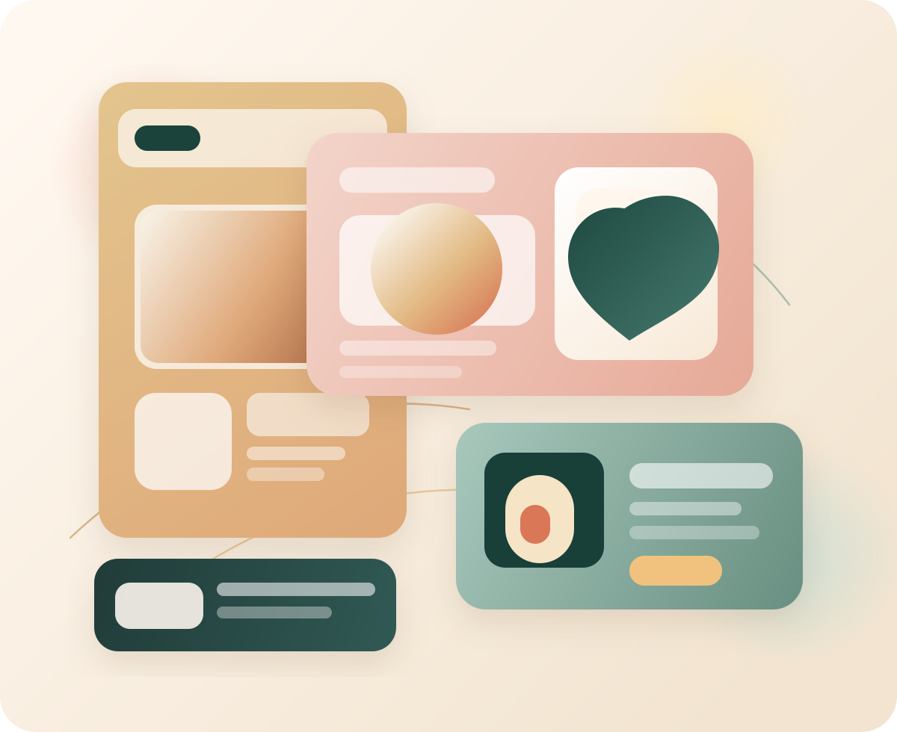
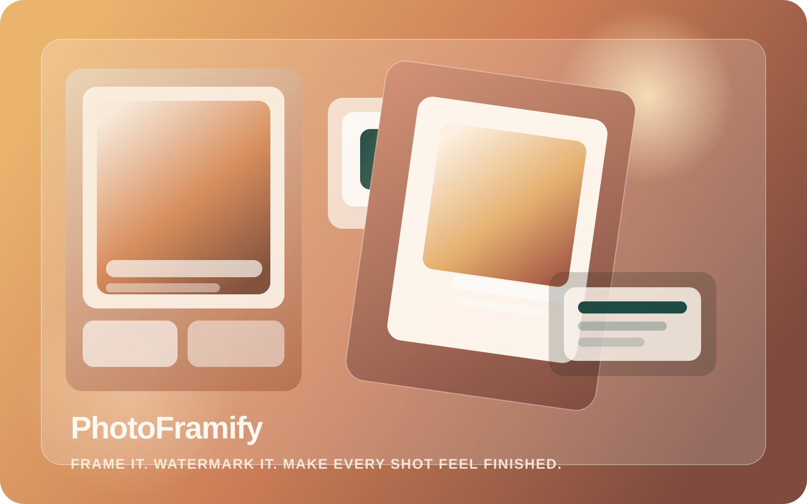
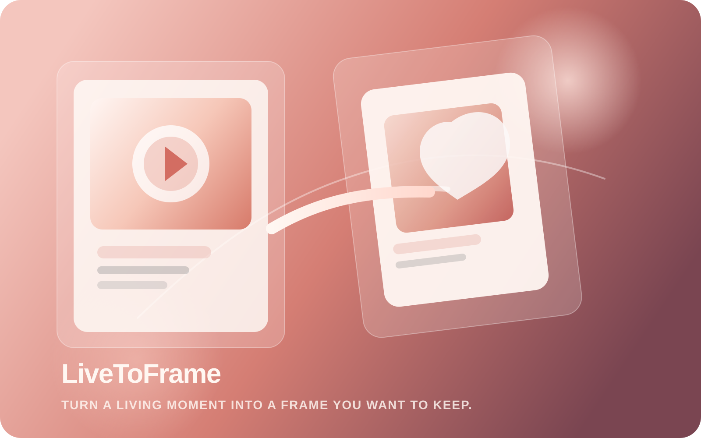
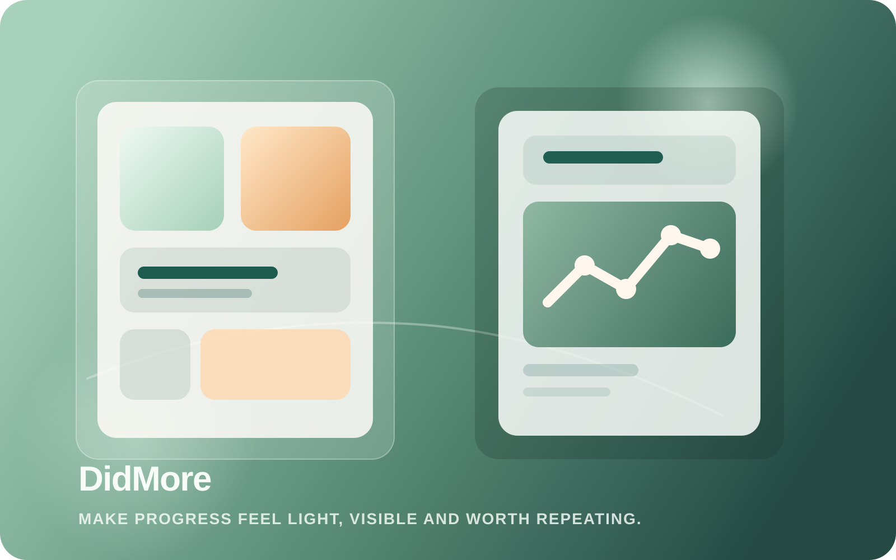
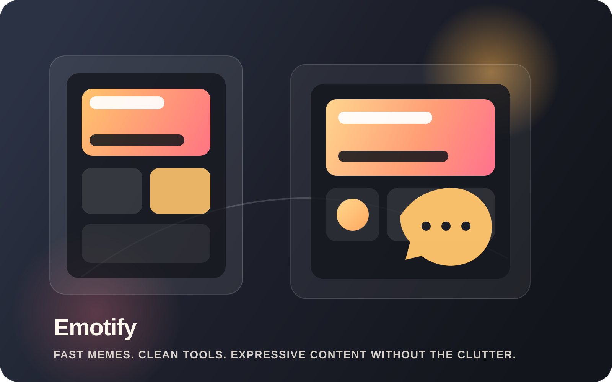

About
我是 Mason，一名持续打磨产品体验的独立开发者。
我偏爱那些使用频率高、但往往被粗糙对待的小工具。相比堆砌功能，我更在意界面气质、交互手感、 信息层级，以及每一次保存、导出、分享是否足够顺滑。
Independent iOS & macOS Products
我专注于原生体验、细节打磨和隐私友好的工具型产品。这里展示的是我正在持续迭代的应用矩阵： 影像创作、Live Photo、习惯养成，以及更轻巧有趣的表达工具。

About
我偏爱那些使用频率高、但往往被粗糙对待的小工具。相比堆砌功能，我更在意界面气质、交互手感、 信息层级，以及每一次保存、导出、分享是否足够顺滑。
Principles
Stack
Experience
Products




What Users Get
Contact